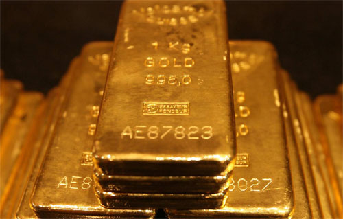

Guld
Guld är kompakt, mjukt, glänsande och den mest formbara och kemiskt tåliga av alla kända metaller. Rent guld har en klart gul färg som traditionellt har ansetts tilltalande, men är så mjukt att det ensamt knappast duger till någon teknisk användning.
I begränsad omfattning har guld även använts medicinskt vid behandling av vissa sjukdomar.